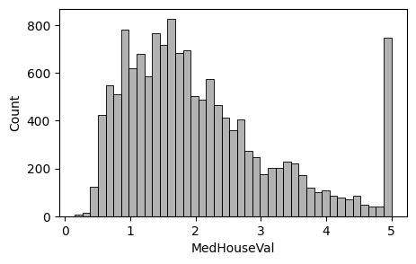
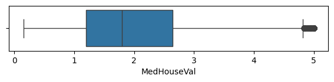
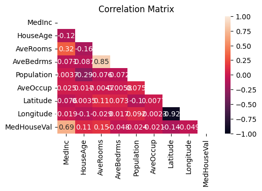

# 라이브러리 불러오기
import numpy as np
import pandas as pd
import matplotlib.pyplot as plt
import seaborn as snsProject(1) 캘리포니아 주택 가격 분석
1.데이터 셋
- [데이터] scikit-learn에서 제공하는 1990년대 캘리포니아 주택 가격에 대한 데이터를 제공함
- 캘리포니아 주택 가격에 영향을 미치는 요인은 무엇인지 파악하고,예측하는 회귀모델을 학습시키고자 함.
- 총 20,640개의 관측값과 8개의 독립변수(feature), 1개의 종속변수(target)으로 구성됨
2. 데이터 확인 및 전처리
# 데이터 불러오기
from sklearn.datasets import fetch_california_housing
data = fetch_california_housing(as_frame = True)
df = data.frame
df.head(3)| MedInc | HouseAge | AveRooms | AveBedrms | Population | AveOccup | Latitude | Longitude | MedHouseVal | |
|---|---|---|---|---|---|---|---|---|---|
| 0 | 8.3252 | 41.0 | 6.984127 | 1.023810 | 322.0 | 2.555556 | 37.88 | -122.23 | 4.526 |
| 1 | 8.3014 | 21.0 | 6.238137 | 0.971880 | 2401.0 | 2.109842 | 37.86 | -122.22 | 3.585 |
| 2 | 7.2574 | 52.0 | 8.288136 | 1.073446 | 496.0 | 2.802260 | 37.85 | -122.24 | 3.521 |
#데이터 확인
df.info()<class 'pandas.core.frame.DataFrame'>
RangeIndex: 20640 entries, 0 to 20639
Data columns (total 9 columns):
# Column Non-Null Count Dtype
--- ------ -------------- -----
0 MedInc 20640 non-null float64
1 HouseAge 20640 non-null float64
2 AveRooms 20640 non-null float64
3 AveBedrms 20640 non-null float64
4 Population 20640 non-null float64
5 AveOccup 20640 non-null float64
6 Latitude 20640 non-null float64
7 Longitude 20640 non-null float64
8 MedHouseVal 20640 non-null float64
dtypes: float64(9)
memory usage: 1.4 MB- 캘리포니아 주택 가격 데이터를 확인한 결과, 관측값은 20,640 개, 변수는 9개로 나타남.
- 주택 가격에 영향을 미치는 특성(feature)은 다음과 같음
- MedInc 지역 중위 소득 (10,000 USD)
- HouseAge 주택 연식 (건축 후 경과된 연도 수)
- AveRooms 가구당 평균 방 개수
- AveBedrms 가구당 평균 침실 개수
- Population 지역 내 인구 수
- AveOccup 가구당 평균 거주 인원 수
- Latitude 위도
- Longitude 경도
- MedHouseVal 주택 중위 가격 (100,000 USD)
- 종속변수( target) 는 Medhouseval(주택중위가격)임
# 데이터 전처리 : 결측값 확인
df.isna().sum()MedInc 0
HouseAge 0
AveRooms 0
AveBedrms 0
Population 0
AveOccup 0
Latitude 0
Longitude 0
MedHouseVal 0
dtype: int64- 결측값은 없었음.
3.데이터 분할 : 학습데이터, 평가데이터
- 학습 데이터와 평가 데이터를 7:3 비율로 분할함
a,b = [10,20]
print(a)
print(b)10
20# 학습/평가 데이터 분할(7:3비율)
X = data.data #feature
y = data.target #target
from sklearn.model_selection import train_test_split
X_train,X_test,y_train,y_test = train_test_split(X,y,test_size=0.3, random_state=42)
# 0.3해서 비율나누고 난수(랜덤)로 시드값 형성하는거임..!X_train| MedInc | HouseAge | AveRooms | AveBedrms | Population | AveOccup | Latitude | Longitude | |
|---|---|---|---|---|---|---|---|---|
| 7061 | 4.1312 | 35.0 | 5.882353 | 0.975490 | 1218.0 | 2.985294 | 33.93 | -118.02 |
| 14689 | 2.8631 | 20.0 | 4.401210 | 1.076613 | 999.0 | 2.014113 | 32.79 | -117.09 |
| 17323 | 4.2026 | 24.0 | 5.617544 | 0.989474 | 731.0 | 2.564912 | 34.59 | -120.14 |
| 10056 | 3.1094 | 14.0 | 5.869565 | 1.094203 | 302.0 | 2.188406 | 39.26 | -121.00 |
| 15750 | 3.3068 | 52.0 | 4.801205 | 1.066265 | 1526.0 | 2.298193 | 37.77 | -122.45 |
| ... | ... | ... | ... | ... | ... | ... | ... | ... |
| 11284 | 6.3700 | 35.0 | 6.129032 | 0.926267 | 658.0 | 3.032258 | 33.78 | -117.96 |
| 11964 | 3.0500 | 33.0 | 6.868597 | 1.269488 | 1753.0 | 3.904232 | 34.02 | -117.43 |
| 5390 | 2.9344 | 36.0 | 3.986717 | 1.079696 | 1756.0 | 3.332068 | 34.03 | -118.38 |
| 860 | 5.7192 | 15.0 | 6.395349 | 1.067979 | 1777.0 | 3.178891 | 37.58 | -121.96 |
| 15795 | 2.5755 | 52.0 | 3.402576 | 1.058776 | 2619.0 | 2.108696 | 37.77 | -122.42 |
14448 rows × 8 columns
y_test20046 0.47700
3024 0.45800
15663 5.00001
20484 2.18600
9814 2.78000
...
17505 2.37500
13512 0.67300
10842 2.18400
16559 1.19400
5786 2.09800
Name: MedHouseVal, Length: 6192, dtype: float6420640*0.3 # 7:3으로 잘 분할됨..!6192.04. 데이터 탐색
# 요약통계량 확인
df_train = pd.concat([X_train,y_train],axis = 1)
df_train.head()| MedInc | HouseAge | AveRooms | AveBedrms | Population | AveOccup | Latitude | Longitude | MedHouseVal | |
|---|---|---|---|---|---|---|---|---|---|
| 7061 | 4.1312 | 35.0 | 5.882353 | 0.975490 | 1218.0 | 2.985294 | 33.93 | -118.02 | 1.93800 |
| 14689 | 2.8631 | 20.0 | 4.401210 | 1.076613 | 999.0 | 2.014113 | 32.79 | -117.09 | 1.69700 |
| 17323 | 4.2026 | 24.0 | 5.617544 | 0.989474 | 731.0 | 2.564912 | 34.59 | -120.14 | 2.59800 |
| 10056 | 3.1094 | 14.0 | 5.869565 | 1.094203 | 302.0 | 2.188406 | 39.26 | -121.00 | 1.36100 |
| 15750 | 3.3068 | 52.0 | 4.801205 | 1.066265 | 1526.0 | 2.298193 | 37.77 | -122.45 | 5.00001 |
# 중위 주택 가격에 대한 분포
plt.figure(figsize=(5,3))
sns.histplot(df_train['MedHouseVal'],color = 'black',alpha=0.3)
plt.show()
# 상자그림으로 보자아
plt.figure(figsize=(7,1))
sns.boxplot(x ='MedHouseVal',data = df_train)
plt.show()
- 중위 주택 가격의 평균은 약 20만 달러로 나타남.(MedHouseVal)
- 표준편차는 11만 달러로 나타남. 중위주택가격의 최소값은 1만 5천달러, 최대값은 50만달러로 나타남.
- 히스토 그램과 상자그림을 살펴보면 중위주택 가격이 매우 높은 이상값이 많이 존재함을 알 수있음.
#산점도
sns.pairplot(df_train,height=0.8,plot_kws={'s':5},diag_kind='kde')
plt.show()_files/figure-html/cell-14-output-1.png)
#상관계수
corr_train = df_train.corr()
corr_train| MedInc | HouseAge | AveRooms | AveBedrms | Population | AveOccup | Latitude | Longitude | MedHouseVal | |
|---|---|---|---|---|---|---|---|---|---|
| MedInc | 1.000000 | -0.117506 | 0.323255 | -0.071110 | 0.003661 | 0.024554 | -0.075892 | -0.019019 | 0.688229 |
| HouseAge | -0.117506 | 1.000000 | -0.157529 | -0.087350 | -0.291589 | 0.017437 | 0.003461 | -0.101083 | 0.106549 |
| AveRooms | 0.323255 | -0.157529 | 1.000000 | 0.845543 | -0.075529 | -0.004659 | 0.111067 | -0.028503 | 0.152106 |
| AveBedrms | -0.071110 | -0.087350 | 0.845543 | 1.000000 | -0.071975 | -0.005809 | 0.073138 | 0.017361 | -0.048455 |
| Population | 0.003661 | -0.291589 | -0.075529 | -0.071975 | 1.000000 | 0.075019 | -0.101665 | 0.092163 | -0.024316 |
| AveOccup | 0.024554 | 0.017437 | -0.004659 | -0.005809 | 0.075019 | 1.000000 | 0.007654 | -0.002295 | -0.020960 |
| Latitude | -0.075892 | 0.003461 | 0.111067 | 0.073138 | -0.101665 | 0.007654 | 1.000000 | -0.923408 | -0.141528 |
| Longitude | -0.019019 | -0.101083 | -0.028503 | 0.017361 | 0.092163 | -0.002295 | -0.923408 | 1.000000 | -0.049347 |
| MedHouseVal | 0.688229 | 0.106549 | 0.152106 | -0.048455 | -0.024316 | -0.020960 | -0.141528 | -0.049347 | 1.000000 |
upp_mat = np.triu(corr_train)plt.figure(figsize = (5,3))
sns.heatmap(corr_train,annot=True,mask=upp_mat,vmin=-1,vmax=1)
plt.title('Correlation Matrix')
plt.show()
- 중위 주택 가격은 지역 중위 소득과 강한 양의 상관관계가 존재함
- 또한 주택연식,가구당 평균 방 개수, 위도 간에도 약한 양의 상관관계가잇음
- 따라서 중위 주택 가격을 예측하는 특성(feature)으로 해당 변수를 선택함.
5. 회귀모델 학습
# 상관관계가 존재하는 특성(feature) 선택
# scikit-Learn에서 입력 데이터(feature)선택
features = ['MedInc','HouseAge','AveRooms','Latitude']
target = 'MedHouseVal'
X_train = df_train[features] # 2차원 배열# 선형 회귀모델 생성 및 학습
from sklearn.linear_model import LinearRegression
model = LinearRegression()
model.fit(X_train,y_train); # ; 찍으면 결과 안나옴.!
#회귀계수(regression coefficient)
pd.DataFrame({'Features':features, 'Coefficient': model.coef_})| Features | Coefficient | |
|---|---|---|
| 0 | MedInc | 0.435658 |
| 1 | HouseAge | 0.016937 |
| 2 | AveRooms | -0.019505 |
| 3 | Latitude | -0.045071 |
- (1)회귀계수를 살펴보면 중위주택 가격은 지역 중위 소득이 1만 달러 증가하면 중위 주택 가격은 4만 3천 달러 증가하는 것으로 나타남.
- (2)또한 주택연식이 1년증가하면 중위주택가격은 1693달러 증가하는 것으로 나타남
- (3)중위주택 가격은 가구당 평균 방의 개수가 1개 증가하면 1950달러 감소하는 것으로 나타남
- (4)위도가 1도 증가하면 중위 주택 가격은 4507달러 감소하는 경향이있음
(1)과 (4)에 의해 이는 경제적으로 여유가 있을수록 좋은 집에 거주함을 알 수 있으며, 일반적으로 캘리포니아주는 남부 지역이 상대적으로 대도시가 많아 주택 가격이 더 높은 것을 반영하고있다.
6. 회귀모델 평가
# 평가 데이터에서도 학습데이터에서 사용한 독립변수만 선택
X_test = X_test[features]
## 회귀모델 평가 : RMSE(MSE에 양의 제곱근), 결정계수
#학습데이터로 학습한 회귀모델에 평가데이터를 입력해서 예측값 계산
y_pred = model.predict(X_test)
#평가 데이터의 실제 관측값과 예측값을 비교하여 모델을 평가
from sklearn.metrics import mean_squared_error,r2_score
RMSE = np.sqrt(mean_squared_error(y_test,y_pred))
R2 = r2_score(y_test,y_pred)
print(f'RMSE :{RMSE:.3f}')
print(f'결정계수 :{R2:.3f}')RMSE :0.794
결정계수 :0.520결과 및 시사점
- RMSE는 0.794로, 주택 중위 가격의 실제값과 예측값이 평균적으로 약 8만 달러 차이가 있다는 것을 의미함
- 학습 데이터에서 주택 중위 가격의 평균은 약 20만 달러인 점을 고려하면, 모델의 평균 오차는 약 25% 수준임을 알 수 있음
- 따라서 평균 오차가 비교적 큰 편이므로, 모델 성능 개선이 필요한 것으로 판단됨
- 회귀계수를 살펴보면 지역 중위 소득, 주택 연식이 증가할수록 주택 중위 가격은 높아지며, 가구당 평균 거주 인원 수, 위도가 증가할수록 주택 중위 가격은 낮아지는 것으로 나타남